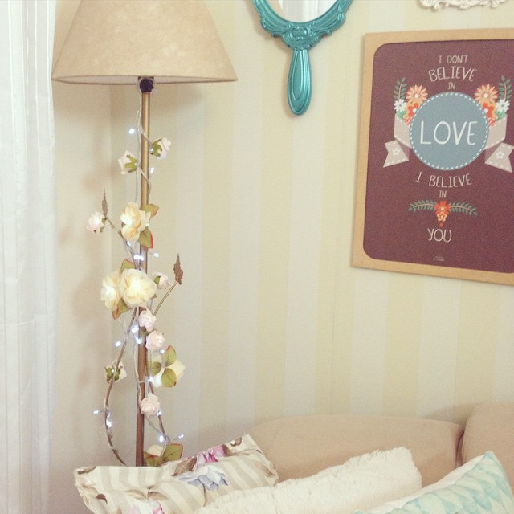
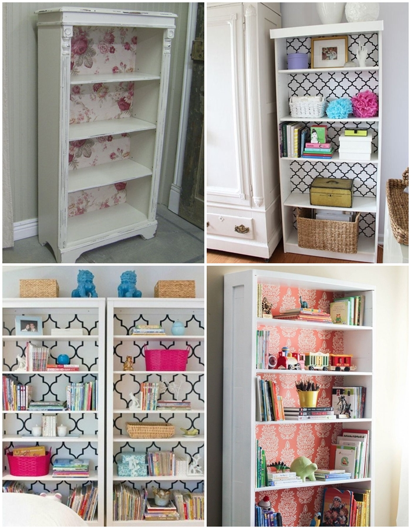

Postado em 17 Outubro 2017

Postado por Mariana BrandãoRetirado em:Morando Sozinha
Deixe sua estante velha com cara de novinha em folha
Postado em 24 Outubro 2017

A ideia é simples: vamos trocar o fundo dessa estante ai por algo mais vivo? É uma ideia simples e
barata, pois você pode utilizar papel contact ou até mesmo aqueles guardanapos de decoupagem que tem infinitos modelos.